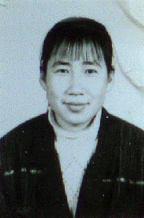

在曲折中寻找人生的价值
尊敬的各位领导、老师，亲爱的同学们：
你们好！
我很高兴能有机会在这里和大家说说我的心里话．我想要说的，不是令人眩目、惊心动魄的大事，我所说的只是我的一点生活经历：
我叫王美华，1993年９月考入东北师范大学历史系历史专业，1997年本科毕业时，被免试保送到历史系中国古代史专业攻读硕士学位。在人们看来，这是一段很平常的经历，但是对于我来说，其中有着常人所没有的汗水和泪水。
我出生在辽宁省瓦房店市的一个乡村，在那里我度过了无忧无虑的童年。我14岁时，父亲患病，经检查是肝癌晚期，一年半中，花光了家中的一切积蓄，并使家里负了一大笔债。原本体弱多病的母亲在
百般焦急
无奈的情况下旧病复发卧倒在床。就在我１５岁那年的春天，父亲还是去了，扔下了一个浑身是病的妻子和年少的孩子。就是在我看到母亲昏倒在父亲的灵柩前的那一刻，我决心要走出山村，我要让我的一生不再如母亲一样的辛贫，我要用我的努力给母亲一个最幸福的晚年，谁也不会想到一个女孩子十五岁时立下的誓言会支持着她走了近十年的历程，然而最终她也没能给母亲一个幸福的晚年。记忆中母亲是瘦小的，一米六几的个子却只有７０斤，然而母亲却坚强地从病床上爬起来又一次挑起了家庭的重担。但那时，我却无法体味到母亲的满腹苦楚，我只知道每天背着破旧的大黄书包上学，全然没有注意到村里已经有许多孩子辍学了，母亲也从未向我提起过这件事。
初中毕业时，我虽然考了所在初中的第一名，却以0.5分之差没有考上市里的重点高中，市里重点高中规定，低于录取分数线十分以内的学生交两千块钱便可入学。而重点高中的校长照顾我说只交一千块钱就可以了。望着那时已徒空四壁的家和被债务折磨得越发羸弱的母亲，我知道即使是我借到了1000元钱，也仍无法拿出每月100元的生活费用。我含泪谢绝了校长，虽然我一心渴望通过重点高中走进大学的殿堂。我渴望读书，渴望上学。在母亲的再三催促下，我只有去学校办了复读手续决定复读一年考中专。
命运却在这时出现了转机，我所在初中学校的校长到我没有报考的地区普通高中瓦房店市２５中学介绍了我的情况，他们决定免除一切学杂费用收下我。那是我第一次真正感受到老师带给我的温暖和扶助，正是从那时开始，我的生活再也没有与老师的关怀分开。我感谢老校长，却不知怎样跟母亲说。毕竟读高中再读大学在方圆十里之中没有几个，人们一向认为只有念重点高中才能考上大学，更何况一个负债累累的家去供一个念普通高中的女孩子呢？母亲可以支撑着让我读完初中，却无法让我去念高中，即便是念普通高中，也是要住校的，住校就意味着要有更多花销。老校长去我家里四次劝说母亲让我读高中，每次我都躲在门外偷听，企盼着母亲会答应。就在我家的大黑狗几乎咬了老校长的第四次来访，母亲终于说她有了主意，告诉老校长别来了。我在家中煎熬了几乎两个月，每天拼命的干活企图让自己忘记自己还有读书的渴望。每天都是家境的困难和读书的渴望在斗争，几次，我望着因为恍惚而割坏了的手指醒悟：我是自私的，因为每次都是读书的渴望占上风。望着日历一片片撕去，离开学的日子越来越近了，我握着录取通知书彻夜难眠，我夜夜告诉自己甘于命运吧，母亲不是不爱你，母亲实在是无能为力了。可是就在开学的头一天晚上，母亲拿出准备好的被褥、脸盆对我说：“你去吧。”
第二天早晨母亲赶着家中的毛驴车送我去汽车站。我心里三分雀跃却七分沉重。望着母亲瘦弱的脊梁我说：“妈，如果哪天家里不行了，你就说一声，我就不念了。女儿尝尝念高中的滋味就行了。”母亲没有回头也没有回答，只是不停的抽打着毛驴。那是我最后一次坐我家的毛驴车了。因为母亲连每月40元的伙食费也拿不出了，唯有把毛驴卖了。
我珍惜高中生活的每一天、每一节课，我决定哪怕只是读几个月，我也要拿出最好的成绩。我忐忑不安地怕家里支持不下去，我更忐忑不安地怕母亲拿不出每月40元钱。每个月末，从母亲满是裂痕的干瘦的手中接过那一叠一元、两元，甚至伍角的钱币组成的40元钱，我总是含泪离去。我更加刻苦努力学习，我不能愧对母亲，不能愧对老校长对我的期望，哪怕是考上大学不念，我也要争口气。每次考试，我总是全校第一名。今生今世也忘不了那段日子，每月40 元的伙食标准，可想而知对于一个正在发育的孩子来说，会造成怎样的营养不良。我经常性的头晕、腹痛、浑身无力，我不敢去医院检查，我怕开药怕住院，更怕耽误功课。几次我拿着医生开的要求化验透视的单子没有走进化验室，而回到学校。头晕严重时，我就请假在自习课时回寝室睡一会恢复一下；腹痛发作的时候，我捂着肚子看书，椅子坐不住了我就坐在墙角的地上；实在挺不住了就吃几片止痛药。高中生活是艰苦的，能够让我坚持下来的原因除了我要考大学的信念以外，也决然缺少不了老师们对我的关心和帮助。校长破例让我头晕时不参加自习，我的班主任时刻关心着我，他从未因为学习和纪律上的事批评我，但是有一次新年时，我也随着同学送给老师一个贺年卡，结果他狠狠地批评了我。而正是他，在我填报志愿时，花了一个晚上的时间帮我分析招生简章，从提前录取一栏到中专一栏，没有一点马虎。有的老师说，大专以下就别那么细了，他却摇着头说：“王美华家里没人懂这个，她自己也不明白，只有我负责了。”老师平淡地说着，我却热泪盈眶。老师矮矮的个子，一下子充满了我的视野。我真正体味到了老师所有的一片无私的心。提前录取一栏，老师和我共同选择了东北师范大学，因为师范院校学费便宜。我以瓦房店市文科第八名的成绩考上了师大，超过了重点高中的许多学生。我高兴地笑了，母亲欣慰的笑了，我的老师和我的同学也笑了。
可是拿到通知书时候，我却偷偷地哭了，800元的学费在平常人家看来是不需要什么考虑的，然而，却要我费尽心思去筹借，就在我有了希望之时，母亲身体已彻底垮了，不能干任何体力劳动了。我害怕母亲会熬不过那四年，我在心中祈求苍天，保佑我的母亲。我怀揣着借来的1000元钱，和放不下的牵挂离开了家门。来到学校交了800元学费之后，我只剩下200元钱。我把这钱存在银行，告诉自己不要随便花一分钱。我每月用59元的补助生活，50元做伙食费9元做零花钱。有一阵子我想再节省点，食堂卖土豆片炒青椒是６角钱一份，我中午打四两饭一个土豆片外加一块红方，中午吃一半，晚上吃一半，坚持了一个多月。虽然我节省了几十元钱，但又出现了头晕、腹痛、浑身无力等现象，至今一看土豆片就反胃。同学强拉我去医院检查，医生警告我若再不注意身体就不能进行正常学习了，我只得恢复了50元的伙食标准。我不相信在学习上我会比别人差，我认真地听每一门课，尤其是外语课，我由一上课就发怵听不懂到半学期后熟悉了发音，期末考试成绩在前三名。
第二学期开学，我对着剩下来的100多块钱发愁，我决定要自己去挣钱。有一份家教，天天晚上去，每月100多元钱。同学都觉得累，我却兴高采烈的接手了，每天晚上顶风冒雪的来往，每晚９点回到宿舍我几近疲惫不堪，最怕路灯坏了，树影晃动，最怕下雨打湿了眼镜。除了维持我正常的学习、生活费用外，我还想攒点钱给母亲买个饭桌，多年来，母亲一直在炕沿边吃饭；我还想买半吨煤，因为母亲已背不动柴了。
天天晚上外出，我失去了很多学习时间，尤其是快考试的时候，我的学生要补课复习考试，我也要复习考试，我不敢像别人那样因为自己考试就把家教辞了，我怕再也找不到这样的工作。我只有一边家教，一边自己复习。我不想耽误功课，为了把失去的学习时间补上，每次期末阶段，我除了家教外的一切时间都坐在教室里，深夜时，我还要到宿舍走廊里学一会儿。我珍惜这来之不易的每堂课，我从不请假。功夫不负有心人，我每学期的成绩都是年级前三名，大学四年，拿了一等、二等人民奖学金。
我在朝着我的目标前进，既然要当人民教师我就要当个合格的人民教师。我不仅努力加强教师基本功训练，而且利用大学四年时间充分锻炼自己。我不但顺利通过了大学英语国家四级和六级考试，又在长春的《新文化报》等报纸上发表了文章，参加系里的教师技能大赛，是学术报告团的成员，还为系里的报纸期刊写稿子，我还是历史系第一份学生自办报纸的发起人和撰稿人之一，并交了入党申请。
我也羡慕同学考研，但我想到的却是我的成绩背后的母亲那瘦弱不堪的身影。我告诉自己，就快毕业了，我就可以有能力照顾好母亲了。我盼着毕业的日子快点到来，我梦想着看到母亲长胖的那一天。我把每个月100元后来150元的家教工资攒到一起，除了自己花销，还要拿回家中，给母亲生活。尤其是过春节给母亲买了一件50元的衣服时，我看见母亲哭了，我也哭了，我告诉母亲，再等一阵子吧，我就要毕业了。毕业了一切就好了。
然而，不幸又一次在我对美好明天的企盼中降临了。大学三年级下学期，也就是九六年“五•一”，从来只在寒暑假回家的我，异常地烦躁不安，只觉得要回家看母亲，只觉得家里一定有事。当我终于抑制不住自己的不安回到家中，才知道母亲已剧烈腹痛２个月了。母亲让我带她去检查。母亲是最怕花钱的，以往有病总是去卫生所买点药就拉倒了，这次她却主动去医院检查，我有一种不祥的预感。检查的结果，母亲患的是肠癌，且已经扩散了。医生宣布她的生命最多不会维持到一年。母亲已感到了不祥，夜里紧拉着我的手说：“孩子，人活着一定要坚强，无论遇见了什么事情你都要坚强地挺过去，这个世上没有过不去的火焰山”。
我不知道自己是怎样回到了学校，只知全力地参加试讲和教育实习。我的教育实习是在东北师范大学附中进行的，所有在附中实习的学生都知道那里的压力，在那里我第一次走上了讲台，我决定以那里作为我教育生涯的开端，望着台下那几十双眼睛，我想如果有一天，我真的成为老师，我要用全身心去爱我的学生，去帮助他们学习，因为我明白，学习是件多么令人向往、值得珍惜的事情。我深知，教师的关心、爱护会让一个学生发生怎样的变化。白天我全力去学习去实践，不给自己一点空间，因为只有不停的忙碌才能让自己控制住那份几乎是抑制不住的悲痛。夜里我偷偷的哭，我痛恨命运的不公，我哭泣母亲这悲楚的命运。我仍然要做家教，但每晚我走在大街上望着高楼中每一家窗户都透出了温馨的灯光，那灯光伴我走了将近3年的时间，我却直到那时才注意到，我知道这么多年来，对于我来说，母亲就意味着家，就像大楼里的每个居室都是家一样，可是如今母亲就要没了，我就要没家了，我觉得我就要变成了浮萍，没有了根。没有了母亲，那是我奋斗的后援，那是我奋斗不息的动力，我再也没有了取得好成绩的喜悦，再没有了感到悲伤时的那份鼓舞。每晚我都留恋在自由大路上，留恋着每束灯光。
在人们眼中，我是一个坚强的女孩，但很多时候我也偷偷地哭，我并不把自己的苦事提在嘴边。虽然有时候我的心仍苦着，但我却笑着对待同学，因为我觉得笑对生活是活着的基本，何必让同学也感染自己的悲伤。别人都说我心宽，说我整天笑哈哈，只有自己才明白生活在挫折当中有多困难！就是因为我懂得了这份生活的艰难，我才珍惜学习的每一天，做好每一件事。我总有一句话来告诉自己：“要做的事，就尽全力做好；否则就不做。”大学四年中，我一边挣钱一边学习，又参加学校的各项活动。我要尽力做一名合格的大学生，做一名未来的合格的人民教师。我要不愧对这份教育的职责。
然而，母亲的病情却时刻拨动着我那脆弱的心弦。上课时，参加活动时，我不时地走神。日夜的悲痛终于打垮了我，我病倒了。这时候，同学和教师都向我伸出了温暖的手，安慰我，我寝室里的同学在我卧床不起时帮我打饭，陪我聊天，她们也曾拉我去公园散心。我的老师把困难补助送到我手里。同时我又受到了长春建设银行“爱心基金”的帮助，正是这些有爱心的人们的帮助又一次让我对生活充满希望，我并非是孤独的，这个社会也并非是冷漠的，在我失落时是这些好人帮我又站了起来，我要走得更好，走得更稳，不辜负母亲，不辜负所有关心爱护我的人们，更不能辜负国家、社会对一个大学生的期望。今天的我，不仅仅是母亲的女儿，更是国家、社会培养的大学生。
毕业时，我以总积分第一名的成绩被免试保送攻读历史硕士学位，面对着那张推荐表我思考了三天三夜才写下了自己的名字，与其同时我又给自己树立了一个新的奋斗目标，计划了一段新的历程。我明白，即使再读三年也不会妨碍我教书育人的愿望，我会把更多的知识奉献给我的学生，我要用更好的成绩去回报母亲回报社会。
母亲去了，她望着我只说：“孩子，你又要受苦三年了。但是妈高兴啊，你有出息。”就这样母亲安心地去了，做女儿却有着永远的遗憾。母亲，她临终也没能等到女儿毕业，走向工作的日子。但是女儿也有一份安慰，因为她看到了母亲眼中的那份欣喜，那份听说女儿被推荐读研究生时的欣喜，母亲已经看到女儿正成长为一个对社会有用的人。
今天，我作为一名硕士研究生，又开始了我半工半读的学习生涯，我不会以挫折为苦，因为我相信没有荆棘就不会开辟出沃野，没有挫折就永远品尝不到攀登之路的宽广，没有失落就永远不会有成功的喜悦。我坚信生命中并非只有眼前的一片天空，带着信心，带着勇气，带着自强不息，走过荆棘，攀过高山之时，就可以在更广阔的天空中寻找人生的价值。
初中毕业时，我虽然考了所在初中的第一名，却以0.5分之差没有考上市里的重点高中，市里重点高中规定，低于录取分数线十分以内的学生交两千块钱便可入学。而重点高中的校长照顾我说只交一千块钱就可以了。望着那时已徒空四壁的家和被债务折磨得越发羸弱的母亲，我知道即使是我借到了1000元钱，也仍无法拿出每月100元的生活费用。我含泪谢绝了校长，虽然我一心渴望通过重点高中走进大学的殿堂。我渴望读书，渴望上学。在母亲的再三催促下，我只有去学校办了复读手续决定复读一年考中专。
命运却在这时出现了转机，我所在初中学校的校长到我没有报考的地区普通高中瓦房店市２５中学介绍了我的情况，他们决定免除一切学杂费用收下我。那是我第一次真正感受到老师带给我的温暖和扶助，正是从那时开始，我的生活再也没有与老师的关怀分开。我感谢老校长，却不知怎样跟母亲说。毕竟读高中再读大学在方圆十里之中没有几个，人们一向认为只有念重点高中才能考上大学，更何况一个负债累累的家去供一个念普通高中的女孩子呢？母亲可以支撑着让我读完初中，却无法让我去念高中，即便是念普通高中，也是要住校的，住校就意味着要有更多花销。老校长去我家里四次劝说母亲让我读高中，每次我都躲在门外偷听，企盼着母亲会答应。就在我家的大黑狗几乎咬了老校长的第四次来访，母亲终于说她有了主意，告诉老校长别来了。我在家中煎熬了几乎两个月，每天拼命的干活企图让自己忘记自己还有读书的渴望。每天都是家境的困难和读书的渴望在斗争，几次，我望着因为恍惚而割坏了的手指醒悟：我是自私的，因为每次都是读书的渴望占上风。望着日历一片片撕去，离开学的日子越来越近了，我握着录取通知书彻夜难眠，我夜夜告诉自己甘于命运吧，母亲不是不爱你，母亲实在是无能为力了。可是就在开学的头一天晚上，母亲拿出准备好的被褥、脸盆对我说：“你去吧。”
第二天早晨母亲赶着家中的毛驴车送我去汽车站。我心里三分雀跃却七分沉重。望着母亲瘦弱的脊梁我说：“妈，如果哪天家里不行了，你就说一声，我就不念了。女儿尝尝念高中的滋味就行了。”母亲没有回头也没有回答，只是不停的抽打着毛驴。那是我最后一次坐我家的毛驴车了。因为母亲连每月40元的伙食费也拿不出了，唯有把毛驴卖了。
我珍惜高中生活的每一天、每一节课，我决定哪怕只是读几个月，我也要拿出最好的成绩。我忐忑不安地怕家里支持不下去，我更忐忑不安地怕母亲拿不出每月40元钱。每个月末，从母亲满是裂痕的干瘦的手中接过那一叠一元、两元，甚至伍角的钱币组成的40元钱，我总是含泪离去。我更加刻苦努力学习，我不能愧对母亲，不能愧对老校长对我的期望，哪怕是考上大学不念，我也要争口气。每次考试，我总是全校第一名。今生今世也忘不了那段日子，每月40 元的伙食标准，可想而知对于一个正在发育的孩子来说，会造成怎样的营养不良。我经常性的头晕、腹痛、浑身无力，我不敢去医院检查，我怕开药怕住院，更怕耽误功课。几次我拿着医生开的要求化验透视的单子没有走进化验室，而回到学校。头晕严重时，我就请假在自习课时回寝室睡一会恢复一下；腹痛发作的时候，我捂着肚子看书，椅子坐不住了我就坐在墙角的地上；实在挺不住了就吃几片止痛药。高中生活是艰苦的，能够让我坚持下来的原因除了我要考大学的信念以外，也决然缺少不了老师们对我的关心和帮助。校长破例让我头晕时不参加自习，我的班主任时刻关心着我，他从未因为学习和纪律上的事批评我，但是有一次新年时，我也随着同学送给老师一个贺年卡，结果他狠狠地批评了我。而正是他，在我填报志愿时，花了一个晚上的时间帮我分析招生简章，从提前录取一栏到中专一栏，没有一点马虎。有的老师说，大专以下就别那么细了，他却摇着头说：“王美华家里没人懂这个，她自己也不明白，只有我负责了。”老师平淡地说着，我却热泪盈眶。老师矮矮的个子，一下子充满了我的视野。我真正体味到了老师所有的一片无私的心。提前录取一栏，老师和我共同选择了东北师范大学，因为师范院校学费便宜。我以瓦房店市文科第八名的成绩考上了师大，超过了重点高中的许多学生。我高兴地笑了，母亲欣慰的笑了，我的老师和我的同学也笑了。
可是拿到通知书时候，我却偷偷地哭了，800元的学费在平常人家看来是不需要什么考虑的，然而，却要我费尽心思去筹借，就在我有了希望之时，母亲身体已彻底垮了，不能干任何体力劳动了。我害怕母亲会熬不过那四年，我在心中祈求苍天，保佑我的母亲。我怀揣着借来的1000元钱，和放不下的牵挂离开了家门。来到学校交了800元学费之后，我只剩下200元钱。我把这钱存在银行，告诉自己不要随便花一分钱。我每月用59元的补助生活，50元做伙食费9元做零花钱。有一阵子我想再节省点，食堂卖土豆片炒青椒是６角钱一份，我中午打四两饭一个土豆片外加一块红方，中午吃一半，晚上吃一半，坚持了一个多月。虽然我节省了几十元钱，但又出现了头晕、腹痛、浑身无力等现象，至今一看土豆片就反胃。同学强拉我去医院检查，医生警告我若再不注意身体就不能进行正常学习了，我只得恢复了50元的伙食标准。我不相信在学习上我会比别人差，我认真地听每一门课，尤其是外语课，我由一上课就发怵听不懂到半学期后熟悉了发音，期末考试成绩在前三名。
第二学期开学，我对着剩下来的100多块钱发愁，我决定要自己去挣钱。有一份家教，天天晚上去，每月100多元钱。同学都觉得累，我却兴高采烈的接手了，每天晚上顶风冒雪的来往，每晚９点回到宿舍我几近疲惫不堪，最怕路灯坏了，树影晃动，最怕下雨打湿了眼镜。除了维持我正常的学习、生活费用外，我还想攒点钱给母亲买个饭桌，多年来，母亲一直在炕沿边吃饭；我还想买半吨煤，因为母亲已背不动柴了。
天天晚上外出，我失去了很多学习时间，尤其是快考试的时候，我的学生要补课复习考试，我也要复习考试，我不敢像别人那样因为自己考试就把家教辞了，我怕再也找不到这样的工作。我只有一边家教，一边自己复习。我不想耽误功课，为了把失去的学习时间补上，每次期末阶段，我除了家教外的一切时间都坐在教室里，深夜时，我还要到宿舍走廊里学一会儿。我珍惜这来之不易的每堂课，我从不请假。功夫不负有心人，我每学期的成绩都是年级前三名，大学四年，拿了一等、二等人民奖学金。
我在朝着我的目标前进，既然要当人民教师我就要当个合格的人民教师。我不仅努力加强教师基本功训练，而且利用大学四年时间充分锻炼自己。我不但顺利通过了大学英语国家四级和六级考试，又在长春的《新文化报》等报纸上发表了文章，参加系里的教师技能大赛，是学术报告团的成员，还为系里的报纸期刊写稿子，我还是历史系第一份学生自办报纸的发起人和撰稿人之一，并交了入党申请。
我也羡慕同学考研，但我想到的却是我的成绩背后的母亲那瘦弱不堪的身影。我告诉自己，就快毕业了，我就可以有能力照顾好母亲了。我盼着毕业的日子快点到来，我梦想着看到母亲长胖的那一天。我把每个月100元后来150元的家教工资攒到一起，除了自己花销，还要拿回家中，给母亲生活。尤其是过春节给母亲买了一件50元的衣服时，我看见母亲哭了，我也哭了，我告诉母亲，再等一阵子吧，我就要毕业了。毕业了一切就好了。
然而，不幸又一次在我对美好明天的企盼中降临了。大学三年级下学期，也就是九六年“五•一”，从来只在寒暑假回家的我，异常地烦躁不安，只觉得要回家看母亲，只觉得家里一定有事。当我终于抑制不住自己的不安回到家中，才知道母亲已剧烈腹痛２个月了。母亲让我带她去检查。母亲是最怕花钱的，以往有病总是去卫生所买点药就拉倒了，这次她却主动去医院检查，我有一种不祥的预感。检查的结果，母亲患的是肠癌，且已经扩散了。医生宣布她的生命最多不会维持到一年。母亲已感到了不祥，夜里紧拉着我的手说：“孩子，人活着一定要坚强，无论遇见了什么事情你都要坚强地挺过去，这个世上没有过不去的火焰山”。
我不知道自己是怎样回到了学校，只知全力地参加试讲和教育实习。我的教育实习是在东北师范大学附中进行的，所有在附中实习的学生都知道那里的压力，在那里我第一次走上了讲台，我决定以那里作为我教育生涯的开端，望着台下那几十双眼睛，我想如果有一天，我真的成为老师，我要用全身心去爱我的学生，去帮助他们学习，因为我明白，学习是件多么令人向往、值得珍惜的事情。我深知，教师的关心、爱护会让一个学生发生怎样的变化。白天我全力去学习去实践，不给自己一点空间，因为只有不停的忙碌才能让自己控制住那份几乎是抑制不住的悲痛。夜里我偷偷的哭，我痛恨命运的不公，我哭泣母亲这悲楚的命运。我仍然要做家教，但每晚我走在大街上望着高楼中每一家窗户都透出了温馨的灯光，那灯光伴我走了将近3年的时间，我却直到那时才注意到，我知道这么多年来，对于我来说，母亲就意味着家，就像大楼里的每个居室都是家一样，可是如今母亲就要没了，我就要没家了，我觉得我就要变成了浮萍，没有了根。没有了母亲，那是我奋斗的后援，那是我奋斗不息的动力，我再也没有了取得好成绩的喜悦，再没有了感到悲伤时的那份鼓舞。每晚我都留恋在自由大路上，留恋着每束灯光。
在人们眼中，我是一个坚强的女孩，但很多时候我也偷偷地哭，我并不把自己的苦事提在嘴边。虽然有时候我的心仍苦着，但我却笑着对待同学，因为我觉得笑对生活是活着的基本，何必让同学也感染自己的悲伤。别人都说我心宽，说我整天笑哈哈，只有自己才明白生活在挫折当中有多困难！就是因为我懂得了这份生活的艰难，我才珍惜学习的每一天，做好每一件事。我总有一句话来告诉自己：“要做的事，就尽全力做好；否则就不做。”大学四年中，我一边挣钱一边学习，又参加学校的各项活动。我要尽力做一名合格的大学生，做一名未来的合格的人民教师。我要不愧对这份教育的职责。
然而，母亲的病情却时刻拨动着我那脆弱的心弦。上课时，参加活动时，我不时地走神。日夜的悲痛终于打垮了我，我病倒了。这时候，同学和教师都向我伸出了温暖的手，安慰我，我寝室里的同学在我卧床不起时帮我打饭，陪我聊天，她们也曾拉我去公园散心。我的老师把困难补助送到我手里。同时我又受到了长春建设银行“爱心基金”的帮助，正是这些有爱心的人们的帮助又一次让我对生活充满希望，我并非是孤独的，这个社会也并非是冷漠的，在我失落时是这些好人帮我又站了起来，我要走得更好，走得更稳，不辜负母亲，不辜负所有关心爱护我的人们，更不能辜负国家、社会对一个大学生的期望。今天的我，不仅仅是母亲的女儿，更是国家、社会培养的大学生。
毕业时，我以总积分第一名的成绩被免试保送攻读历史硕士学位，面对着那张推荐表我思考了三天三夜才写下了自己的名字，与其同时我又给自己树立了一个新的奋斗目标，计划了一段新的历程。我明白，即使再读三年也不会妨碍我教书育人的愿望，我会把更多的知识奉献给我的学生，我要用更好的成绩去回报母亲回报社会。
母亲去了，她望着我只说：“孩子，你又要受苦三年了。但是妈高兴啊，你有出息。”就这样母亲安心地去了，做女儿却有着永远的遗憾。母亲，她临终也没能等到女儿毕业，走向工作的日子。但是女儿也有一份安慰，因为她看到了母亲眼中的那份欣喜，那份听说女儿被推荐读研究生时的欣喜，母亲已经看到女儿正成长为一个对社会有用的人。
今天，我作为一名硕士研究生，又开始了我半工半读的学习生涯，我不会以挫折为苦，因为我相信没有荆棘就不会开辟出沃野，没有挫折就永远品尝不到攀登之路的宽广，没有失落就永远不会有成功的喜悦。我坚信生命中并非只有眼前的一片天空，带着信心，带着勇气，带着自强不息，走过荆棘，攀过高山之时，就可以在更广阔的天空中寻找人生的价值。